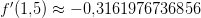
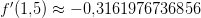
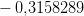
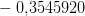
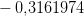
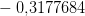
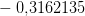
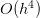

8.2 Diferenças finitas de ordem mais alta
Para aproximar a derivada de uma função  em
em  ,
,  ou
ou  usaremos os três pontos vizinhos
usaremos os três pontos vizinhos  ,
,  e
e  . Uma
interpolação usando polinômios de Lagrange para esses três pontos é da forma:
. Uma
interpolação usando polinômios de Lagrange para esses três pontos é da forma:

 é
é
 | (8.5) |
Trocando  por
por  , temos
, temos
 |
Considerando uma malha equiespaçada onde  e
e  ,
temos:
,
temos:
![′ - 3h - 2h
f (x0) = f (x0 )-----------+ f (x1)--------
(- h )(- 2h )′′′ (h)(- h)
----h--- f--(ξ-(x0-))-
+ f(x2)(2h )(h ) + 6 ((- h )(- 2h ))
[ ] ′′′
= -1 - 3-f(x0) + 2f(x1) - 1f (x2) + h2 f--(ξ(x0-))
h 2 2 3](main3546x.png) |
Similarmente, trocando  por
por  ou trocando
ou trocando  por
por  na expressão (8.5),
temos outras duas expressões
na expressão (8.5),
temos outras duas expressões
![1[ 1 1 ] f′′′(ξ(x1 ))
f′(x1) = --- --f(x0) + -f (x2) + h2 ----------
h[ 2 2 ] 6 ′′′
f′(x ) = 1- 1f(x ) - 2f (x ) + 3-f(x ) + h2f--(ξ(x2))
2 h 2 0 1 2 2 3](main3551x.png)
![[ ] ′′′
f′(x0) = 1- - 3f(x0) + 2f(x0 + h) - 1-f(x0 + 2h) + h2f--(ξ(x0))
h 2 2 3
′ 1-[ 1- 1- ] 2f′′′(ξ(x0 +-h))
f (x0 + h) = h - 2f(x0) + 2f (x0 + 2h) + h 6
[ ] ′′′
f′(x0 + 2h) = 1- 1f(x0) - 2f (x0 + h ) + 3f(x0 + 2h) + h2 f-(ξ(x0-+-2h))-
h 2 2 3](main3552x.png)
![′ 1 2f′′′(ξ(x0))
f (x0) = 2h-[- 3f (x0) + 4f (x0 + h) - f(x0 + 2h)] + h---3-----(8.6)
′′′
f ′(x0) = -1-[f(x0 + h) - f(x0 - h)] + h2 f-(ξ-(x0-))- (8.7)
2h 6
′ -1- 2f-′′′(ξ(x0))
f (x0) = 2h [f(x0 - 2h) - 4f(x0 - h) + 3f (x0 )] + h 3 (8.8)](main3553x.png)
Analogamente, para construir as fórmulas de cinco pontos tomamos o polinômio de Lagrange para cinco pontos e chegamos a cinco fórmulas, sendo uma delas a seguinte:
![4
f′(x0) = -1--[f(x0 - 2h) - 8f(x0 - h ) + 8f (x0 + h ) - f (x0 + 2h)]+ h-f(5)(ξ(x0))
12h 30](main3554x.png) | (8.9) |
 em
em  pelas fórmulas de três e cinco pontos para
pelas fórmulas de três e cinco pontos para  ,
,  e
e  .
.
Solução. No Scilab, podemos computar estas derivadas numéricas com
 da seguinte forma:
da seguinte forma:
--> x=1.5
--> h=0.1
--> //progressiva de ordem 1
--> dp1 = (f(x+h)-f(x))/h
--> //regressiva de ordem 1
--> dr1 = (f(x)-f(x-h))/h
--> //central de ordem 2
--> dc2 = (f(x+h)-f(x-h))/(2*h)
--> //progressiva de ordem 2
--> dp2 = (-3*f(x)+4*f(x+h)-f(x+2*h))/(2*h)
--> //regressiva de ordem 2
--> dr2 = (f(x-2*h)-4*f(x-h)+3*f(x))/(2*h)
--> //central de ordem 4
--> dc4 = (f(x-2*h)-8*f(x-h)+8*f(x+h)-f(x+2*h))/(12*h)
e, análogo, para  e
e  . O valor analítico da derivada é
. A Tabela 8.1 mostra os resultados computados
com as derivadas numéricas.
. O valor analítico da derivada é
. A Tabela 8.1 mostra os resultados computados
com as derivadas numéricas.
| Diferenças Finitas |  |  | |
Progressiva  |  |  |  |
| Regressiva |  |  |  |
Progressiva  |  |  |  |
Central  |  |  |  |
Regressiva  |  |  |  |
| Central  |  |  |  |
 em
em  . Veja o
Exemplo 8.2.1.
. Veja o
Exemplo 8.2.1.

Exercícios
Em construção ... Gostaria de colaborar na escrita deste livro? Veja como em:
* As versões do livro disponíveis no site podem estar desatualizadas, veja a versão PDF atual no repositório GitHub oficial do projeto.
- IME - UFRGS